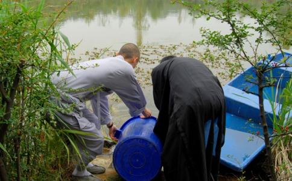

放生只需拿出一点时间，拿一部分钱，购买那些面临被杀的生命，救助他们，然后，按照简单仪轨、选择一个远离人类不易被捕捉的额地方，把物命放掉。就有无上功德，就可以化解业障、
阿弥陀佛，拔一毛而立天下，何乐而不为？
放生，有两种方式：一是自己放生，二是可以委托放生。
如果你时间地点都很方便，可以自己买物放生，体会那份感应和
如果你时间地点不很方便，可以委托他人放生，同样分享那份喜悦福报。
一、放生时间有讲究吗？放生就是行善积德，所以，放生随时都可以进行。
行善积德不需要算卦，不需要看时辰，任何时候都可以。
行善积德，佛
如果天很热，你请求佛菩萨、善神保佑帮助，就会很凉爽；
如果天很冷，你请求佛菩萨、善神保佑帮助，就会很温暖；
如果天下雨，你请求佛菩萨、善神保佑帮助，就会瞬间停雨；
放生感天动地，神奇灵验，必受到天地保护，
放生没有什么特别要求，只要你喜欢、只要符合放生条件，你可以根据实际情况，根据你的情况
1、飞禽类：山鹰、老鹰、猫头鹰、麻雀、喜鹊、各类鸟、山鸡、斑鸠、海鸟、鹦鹉、鹧鸪等；
2、水族类：鱼仔、鱼卵、大头鱼、鲢鱼、鳝鱼、黄鳝、甲鱼、鲤鱼、鲫鱼、鲶鱼、泥鳅、乌龟、青蛙、鳖、螃蟹、蛤蜊、螺蛳等；
3、昆虫类：蚂蚁、喂鸟的虫子、喂鱼的虫子、蚂蚱、蝎子、螳螂等。
4、动物类：狐狸、蛇、蚯蚓、狼、老鼠、黄鼠狼、野猪、猫、狗、刺猬等。
5、其他……。
1、山多、树木多，可以放飞禽类、昆虫类、动物类等。
2、水多、水源多，可以放生水族类等等。
3、具体情况，具体进行就可以。
三、可以自己放生。自己放生，要注意三点：
1、要提前勘察，选择远离被人捕捉、垂钓的地方；可以保证物命活下去。避免你前面放、后面有人捉。
2、如果是蛇等，更要远离人群，避免影响附近居民
3、特殊情况：如果你是路边忽然碰到那些卖乌龟的等，无法选择地点的，可以采取打出租车方式，让他们带你到附近水源地放生。
1、最好直接到市场上随机购买。
2、不要订购，不要让人捕捉了卖给你；有些人故意问你是否放生，知道你放生，就去捕捉了卖给你。
如果你是委托放生组织代替你放生，虽然不在现场，也要回向两次：
1、在你捐款的时候，做一次回向。
2、知道放生组织放生时间时候，又做一次回向。
代放生回向内容：说明
人既爱其寿，生物爱其命。放生合天心，放生顺佛令。
放生免三灾，放生离九横。放生
放生子孙昌，放生家门庆。放生无忧恼，放生少疾病。
放生解冤结，放生罪垢净。放生观音慈，放生普贤行。
放生与
（一）无刀兵劫。世上刀兵大劫，皆由人心好杀所致。人人戒杀放生，则人人全其慈悲爱物之心，而刀兵劫运，亦自消灭于无形，此转移世运之绝大运动也，深望大政治家，大教育家，大农工家，注意于此，力为提倡，必有绝大效果。
（二）集诸吉祥。吾人一发慈悲之心，则喜气集于其身，此感应必然之理。
（三）长寿
（四）多子宜男。放生者善体天地好生之心，故获宜男之庆。
（五）诸佛
（六）物类感恩。所救生物临死得活，皆大欢喜，感恩思德，永为万劫图报之缘。
（七）无诸灾难。慈悲之人，福德日增，一切患难，皆无形消灭。
（八）得生天上。戒杀放生者，来世得生于四王天，享无边之福。若兼修
（九）四季安宁。现在为人生极危险时代。盖烟酒之癖，恋爱之魔，缠绕众人。如众生报恩，则诸恶消灭，四季安宁。
（十）永远福寿。动物由下级进于高阶之状态，与人类由野蛮进于文明之阶级相符合。据生物学家之言曰：凡生物皆应于外界之状态而生变化。如人人戒杀放生，则生生不息，善心相感，正似子孙代代相传，永远福寿。
总结：世界上就没有众生平等，弱肉强食才是这个世界的规则，弱者淘汰，虽然听起来真的很残忍，但事实就是这样，人类传承下来绝对不是因为慈悲。